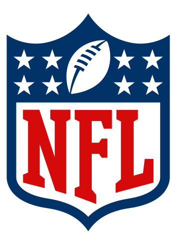
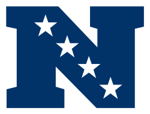
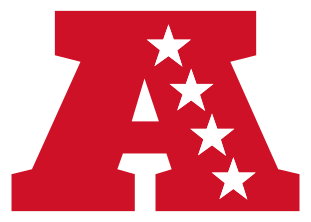
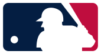
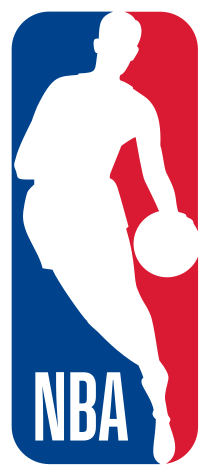
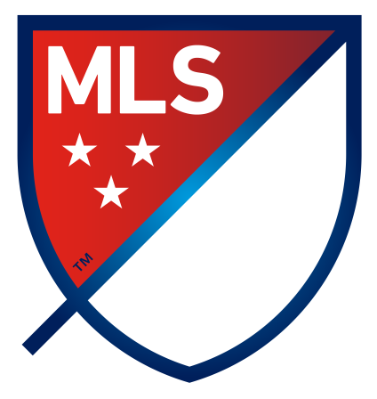
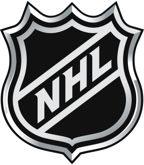

Regenbogenreich
Reist
American Football Trip in die USA
Im Herbst geht es für die Sportkorrespondenten des Rechenbogenreiches in das Land der unbegrenzten Möglichkeiten, in die USA, um bei einem NFL Spiel, Ihr Team im Heimatland des Footballs bejubeln zu können. Yeah-ha!.svg)

.svg)
E pluribus unum = Aus vielen eines
National Football League 
Die National Football League (NFL) besteht aktuell aus 32 Mannschafteb, die als Franchises in der National Football Conference (NFC)  und der American Football Conference (AFC)  organisiert sind. Jeder Conference gliedert sich wiederum in die vier Divisions East, North, South und West. Zum Ende der Seasion spielen in den Play-Offs the beiden Conferences Ihren Champion aus. Im Superbowl treffen schließlich die beide Sieger der NFC und AFC aufeinandern, um den Champs aller Champion aus zu spielen. Und was spielen die Buben? American Football, Schach mit Menschen ... oder so :-)... Florida, dem Sunshine-State
- Autorennen in Daytona. Most Famous: Datona 500
- Major League Baseball mit den Miami Marlins und Tampa Bay Rays
- NBA Basketball mit Miami Heat und den Orlando Magic
- Major League Soccer mit Orlando City SC und Inter Miami CF
- Was darf auf keinen Fall in einem Sunshine-Sate fehlen? Ice Hockey mit den Tampa Bay Lightning und den Florida Panthers.
Stay tuned!